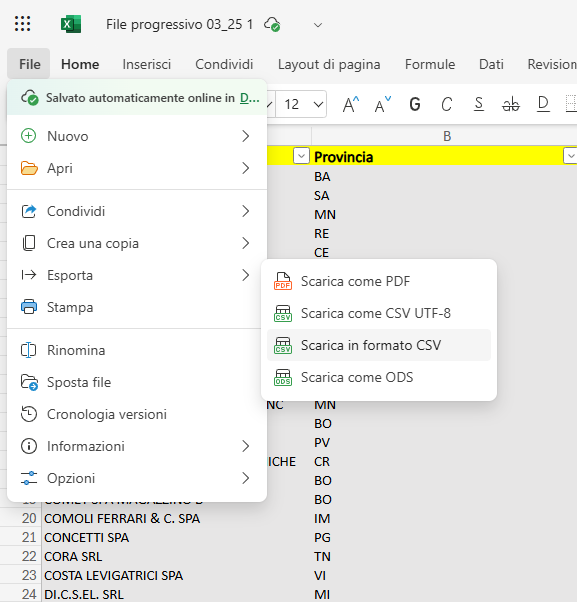
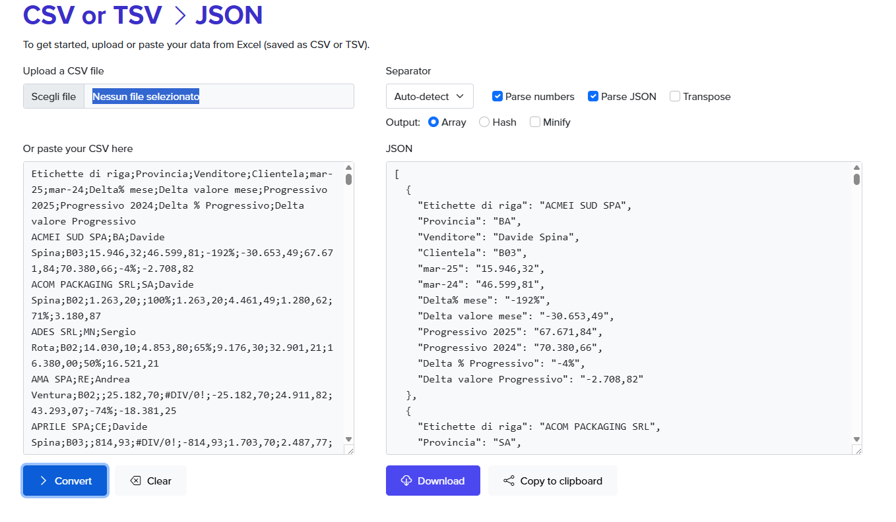
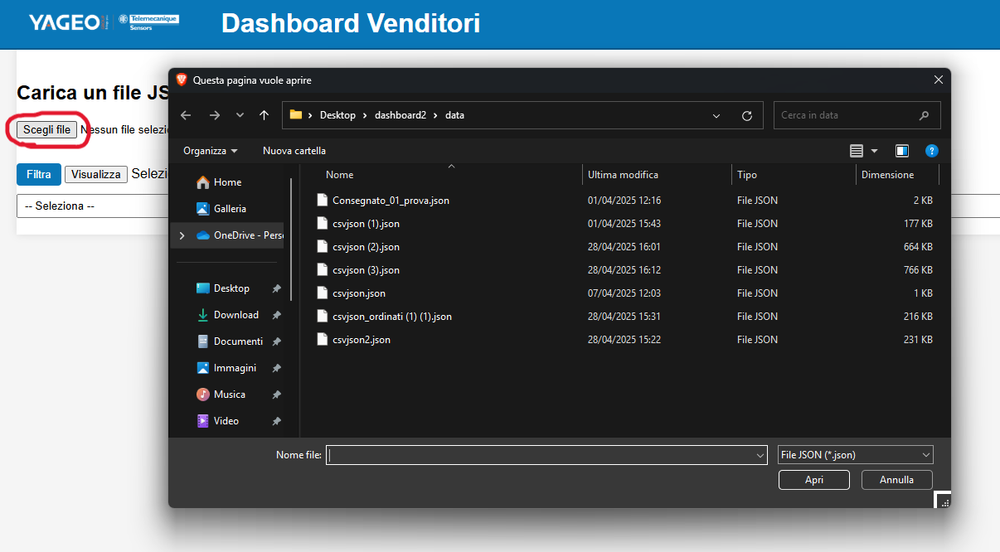

Per cercare informazioni in una colonna, ti basta scrivere il nome o la parola che vuoi trovare nello spazio sopra la colonna.
Questa pagina ti guiderà attraverso i passaggi necessari per utilizzare correttamente il programma.
Per prima cosa, esporta il tuo file Excel in formato .CSV. Puoi farlo tramite il menu di Excel:
Immagine di esempio:
Utilizza un convertitore online gratuito per convertire il tuo file .CSV in JSON. Un sito utile per questa operazione è:
https://www.convertcsv.com/csv-to-json.htmImmagine di esempio del sito:
Una volta che hai il file JSON, puoi caricarlo nel programma utilizzando il pulsante "CSV to JSON". Seleziona il file dal tuo computer e caricalo.
Immagine di esempio del caricamento:
Se hai problemi con il caricamento del file o il programma non funziona correttamente, prova ad aggiornare la pagina.